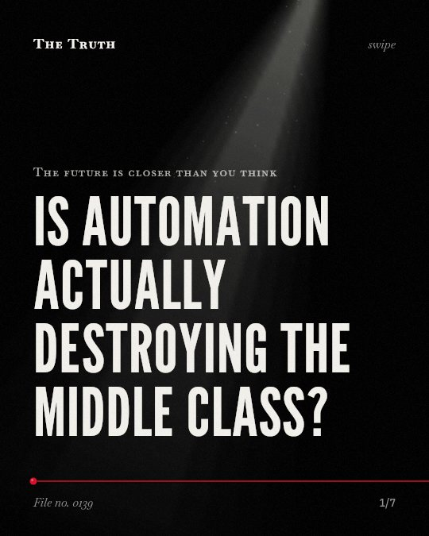

The future is closer than you think
Is automation actually destroying the middle class?

Labor polarization disappears when only native workers are considered.
The shift toward high- and low-skill jobs is significantly influenced by low-skilled immigration rather than just technological change.
Supported. At least one solid peer-reviewed study. The evidence is mixed.
What the research found
The polarization of employment toward high- and low-skill occupations disappears when only native workers are considered.
“We show that the observed polarization of employment toward the high- and low-skill occupations disappears when only native workers are considered.”
Study, 2021. Mandelman & Zlate, American Economic Journal Macroeconomics.
Low-skilled immigration explains employment growth at the low tail of the skill distribution.
“Instead, low-skilled immigration explains employment growth at the low tail of the skill distribution.”
Study, 2021. Mandelman & Zlate, American Economic Journal Macroeconomics.
The evidence for task-biased technological change, which reduces demand for routine middle-wage jobs but increases demand for non-routine jobs, is not supported for the 1970s and 1980s in Sweden.
“However, our estimates do not support this explanation for the 1970s and 1980s.”
Study, 2015. Adermon & Gustavsson, Scandinavian Journal of Economics.
On average, there is no evidence of polarization in developing countries.
“Census data then confirms this, showing on average no evidence of polarization in developing countries.”
Study, 2016. Molina & Maloney, World Bank, Washington, DC eBooks.
The drop in male participation rates during the past several decades can be explained in part by an erosion of middle-skill job opportunities.
“the drop in male participation rates during the past several decades can be explained in part by an erosion of middle-skill job opportunities.”
Study, 2015. Foote & Ryan, National Bureau of Economic Research.
In Sweden between 1975 and 2005, there was an expansion of the highest- and lowest-paid jobs compared to middle-wage jobs.
“between 1975 and 2005, Sweden exhibited a pattern of job polarization with expansions of the highest‐- and lowest‐-paid jobs compared to middle‐-wage jobs.”
Study, 2015. Adermon & Gustavsson, Scandinavian Journal of Economics.
The evidence on automation is mixed.
While some countries show an expansion of high- and low-paid jobs, other studies show no evidence of task-biased technological change or labor polarization in developing nations.
The middle class is being hollowed out.
That may be why you see fewer middle-skill job opportunities today. The erosion of these roles contributes to lower male participation rates in the workforce.
This part is our reading of the evidence, not a finding.
A quiet office building.
You walk past rows of desks that once held people doing routine administrative work. Now, those rooms are empty or serve a different purpose.
The honest summary
The evidence shows that while routine tasks are being automated and middle-skill jobs are declining in some contexts, the broader labor market polarization is complex and influenced by migration and regional differences.
The evidence for task-biased technological change is not conclusive and varies significantly depending on the time period and the specific population (e.g., native vs. immigrant workers) being studied.
What happens when the middle disappears?
Sources
- Adrian Adermon, Magnus Gustavsson (2015). Job Polarization and Task‐Biased Technological Change: Evidence from Sweden, 1975–2005. Scandinavian Journal of Economics. Study, cited 129 times.
- Federico Mandelman, Andrei Zlate (2021). Offshoring, Automation, Low-Skilled Immigration, and Labor Market Polarization. American Economic Journal Macroeconomics. Study, cited 38 times.
- Carlos Molina, William F. Maloney (2016). Are Automation and Trade Polarizing Developing Country Labor Markets, Too?. World Bank, Washington, DC eBooks. Study, cited 111 times.
- Christopher L. Foote, Richard Ryan (2015). Labor Market Polarization Over the Business Cycle. National Bureau of Economic Research. Study, cited 34 times.
Also read for this file, not quoted
This file was researched and drafted by software, then checked by rules a model cannot talk its way around: each quote above was matched word for word against the paper, and every number had to appear in it. How files are made.